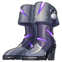
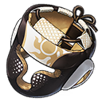
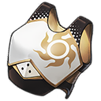
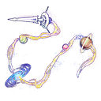

추천 광추
어떤 에이언즈의 몰락
헤르타 상점 · 공격력 중첩
효과 자세히
공격당 +16%, 최대 4스택.
비밀 맹세
피해 +40%
효과 자세히
착용자보다 HP 비율이 높은 상대에게 추가 +40%.
마음에 새긴 약속
격파 특수효과 +56%
효과 자세히
물리 격파와 필살기 후 치확을 활용.
추천 유물
지식의 바다에 빠진 학자 4 · 뭇별 경기장 2
- 머리
 주옵션HP부옵션목표 속도 · 치명타 확률 · 치명타 피해 · 공격력%
주옵션HP부옵션목표 속도 · 치명타 확률 · 치명타 피해 · 공격력% - 손
 주옵션공격력부옵션목표 속도 · 치명타 확률 · 치명타 피해 · 공격력%
주옵션공격력부옵션목표 속도 · 치명타 확률 · 치명타 피해 · 공격력% - 몸통
 주옵션치명타 확률 / 피해부옵션목표 속도 · 치명타 확률 (주옵션 제외) · 치명타 피해 · 공격력%
주옵션치명타 확률 / 피해부옵션목표 속도 · 치명타 확률 (주옵션 제외) · 치명타 피해 · 공격력% - 다리

주옵션속도 / 공격력%부옵션목표 속도 · 치명타 확률 · 치명타 피해 · 공격력% (주옵션 제외) - 구체
 주옵션물리 피해 / 공격력%부옵션목표 속도 · 치명타 확률 · 치명타 피해 · 공격력% (주옵션 제외)
주옵션물리 피해 / 공격력%부옵션목표 속도 · 치명타 확률 · 치명타 피해 · 공격력% (주옵션 제외) - 매듭
 주옵션공격력%부옵션목표 속도 · 치명타 확률 · 치명타 피해
주옵션공격력%부옵션목표 속도 · 치명타 확률 · 치명타 피해
이 조합을 추천하는 이유
전투 스킬·필살기 피해를 보강. 치확 70% 이상에서 경기장 발동.
스트리트 격투왕 4 · 창공 전선 그라모스 2
- 머리

주옵션HP부옵션목표 속도 · 치명타 확률 · 치명타 피해 · 공격력% - 손
 주옵션공격력부옵션목표 속도 · 치명타 확률 · 치명타 피해 · 공격력%
주옵션공격력부옵션목표 속도 · 치명타 확률 · 치명타 피해 · 공격력% - 몸통

주옵션치명타 확률 / 피해부옵션목표 속도 · 치명타 확률 (주옵션 제외) · 치명타 피해 · 공격력% - 다리
 주옵션속도 / 공격력%부옵션목표 속도 · 치명타 확률 · 치명타 피해 · 공격력% (주옵션 제외)
주옵션속도 / 공격력%부옵션목표 속도 · 치명타 확률 · 치명타 피해 · 공격력% (주옵션 제외) - 구체
 주옵션물리 피해 / 공격력%부옵션목표 속도 · 치명타 확률 · 치명타 피해 · 공격력% (주옵션 제외)
주옵션물리 피해 / 공격력%부옵션목표 속도 · 치명타 확률 · 치명타 피해 · 공격력% (주옵션 제외) - 매듭
 주옵션공격력%부옵션목표 속도 · 치명타 확률 · 치명타 피해
주옵션공격력%부옵션목표 속도 · 치명타 확률 · 치명타 피해
이 조합을 추천하는 이유
피격·공격 시 공격력을 쌓고, 속도 135 이상이면 글라모스 피해 증가.
스트리트 격투왕 4 · 우주 봉인 정거장 2
- 머리 주옵션HP부옵션목표 속도 · 치명타 확률 · 치명타 피해 · 공격력%
- 손
주옵션공격력부옵션목표 속도 · 치명타 확률 · 치명타 피해 · 공격력%
- 몸통 주옵션치명타 확률 / 피해부옵션목표 속도 · 치명타 확률 (주옵션 제외) · 치명타 피해 · 공격력%
- 다리
주옵션속도 / 공격력%부옵션목표 속도 · 치명타 확률 · 치명타 피해 · 공격력% (주옵션 제외)
- 구체 주옵션물리 피해 / 공격력%부옵션목표 속도 · 치명타 확률 · 치명타 피해 · 공격력% (주옵션 제외)
- 매듭

주옵션공격력%부옵션목표 속도 · 치명타 확률 · 치명타 피해
이 조합을 추천하는 이유
격투왕의 공격·피격 공격력 중첩과 정거장의 전투 속도 120 추가 공격력 조건을 사용합니다.
이 정도면 잘 키웠다
선택한 세팅 기준 · —는 확인된 수치 없음
- 준종결 치확 전투 중
스킬과 필살기를 강화합니다.
| 스탯 | 추천 스탯 | 준종결 | 종결 |
|---|---|---|---|
| 공격력 | 2000~2800+ | — | — |
| 속도 | 134 | — | — |
| 치명타 확률 | 65% | 전투 70%[1]자체 계산 · 뭇별 경기장은 전투 치명타 확률 70% 이상에서 스킬·일반 공격 피해 20% 증가가 발동합니다.자체 계산 | — |
| 치명타 피해 | 120~130%+ | — | — |
스탯 조건과 각주
- 치명타 확률 · 준종결 자체 계산 · 뭇별 경기장은 전투 치명타 확률 70% 이상에서 스킬·일반 공격 피해 20% 증가가 발동합니다. ↑
- 준종결 속도 전투 중
공격과 피격으로 공격력을 쌓고 전투 속도로 그라모스를 발동합니다.
| 스탯 | 추천 스탯 | 준종결 | 종결 |
|---|---|---|---|
| 공격력 | 2000~2800+ | — | — |
| 속도 | 134 | 전투 135[1]자체 계산 · 그라모스 2세트의 첫 피해 증가 +12% 발동점입니다.자체 계산 | — |
| 치명타 확률 | 65~70%+ | — | — |
| 치명타 피해 | 120~130%+ | — | — |
스탯 조건과 각주
- 속도 · 준종결 자체 계산 · 그라모스 2세트의 첫 피해 증가 +12% 발동점입니다. ↑
시트의 물리 딜러 추천 세팅입니다.
| 스탯 | 추천 스탯 | 준종결 | 종결 |
|---|---|---|---|
| 공격력 | 3000 | — | — |
| 치명타 확률 | 80% | — | — |
| 치명타 피해 | 120% | — | — |
세팅 기준·출처
공개 가이드에서 이 세팅의 준종결 또는 종결 수치를 확인하지 못했습니다.
성혼과 추천 돌파
스토리·상점 재화로 해금. 치확과 특성 유지에 4·6단계가 유용.
1필살기 처치 에너지 +10pt
공격 1회당 한 번.
2물리 약점 적 명중 → 공격력 5%만큼 회복
가합의 인연
3전투 스킬·특성 +2
해당 스킬과 대응 강화 스킬의 레벨을 올린다.
4격파된 적 공격 치확 +25%추천
파멸의 순간을 응시하는 눈
5필살기 +2 · 일반 공격 +1
해당 스킬과 대응 강화 스킬의 레벨을 올린다.
6적 처치에도 특성 발동추천
우주 개척의 의지
추천 파티


기본 운영과 행적
기본 운영
단일 적에는 단일 필살기, 적이 밀집하면 확산 필살기와 전투 스킬. 물리 약점 격파로 특성을 쌓는다.
행적 육성 순서
전투 스킬 → 필살기 → 특성 → 일반 공격. 승급 6단계 스킬 피해 먼저.
아하 속도 계산기 →